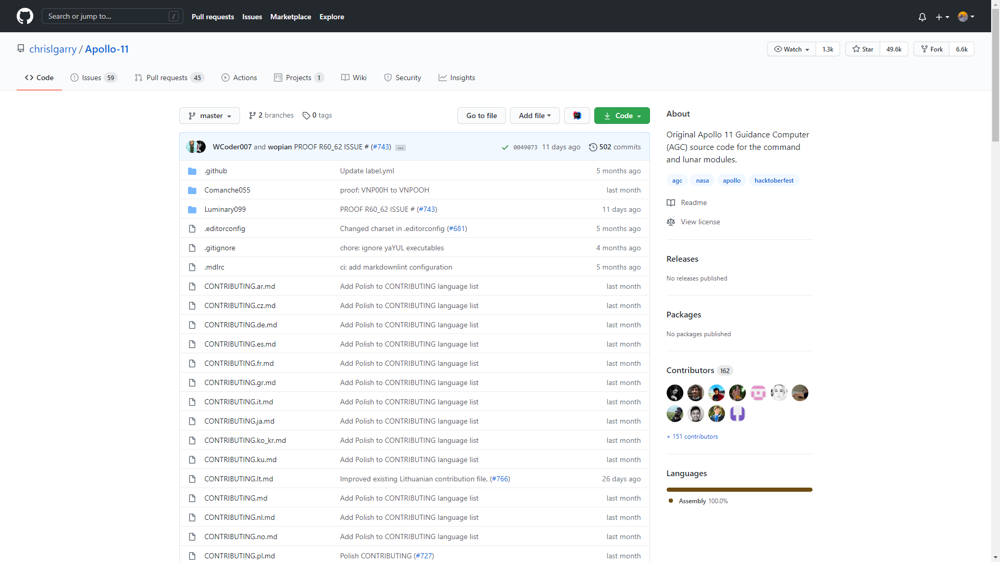

Margaret Hamilton a rejoint le laboratoire Charles Stark Draper au MIT en 1963 et a commencé à travailler sur le programme spatial Apollo. Hamilton a d'abord été embauché comme programmeur, mais est vite passé à la conception des systèmes. Finalement, elle a été choisie pour diriger le développement de tous les logiciels du module de commande, qui étaient comprennent les logiciels de navigation, de guidage, et d'atterrissage lunaire. Son équipe a été crédité du développement du logiciel pour Apollo et Skylab.
Hamilton amenait souvent sa fille, Lauren, au travail pendant les heures creuses.
Une fois, alors que certains membres de l'équipe exécutaient des scénarios de mission sur l'ordinateur de simulation hybride, Lauren est allée explorer et a commencé à appuyer sur les touches du DSKY au hasard.
Elle a lancé un scénario de mission et a provoqué l'échec de la mission en sélectionnant P01 (le programme d'attérissage) au plein milieu du vol. Hamilton a commencé à s'inquiéter que le programme P01 pouurait être sélectionné par inadvertance par un vrai astronaute au cours d'une vraie mission.
Ce genre d'accident serait catastrophique car il effacerait les données de navigation.
Cependant, la direction de la NASA a refusé qu'elle ajoute du code pour éviter ce problème car elle considérait que ses astronautes ne commeteraient jamais une telle erreur.
Hamilton se voit alors contraint d'ajouté un court commentaire au logiciel: "ne sélectionnez pas P01 pendant le vol".
Ironiquement, au cours de la mission suivante, Apollo 8, Jim Lovell (aussi pilote de la mission Apollo 13) a fait la même erreur.
Heureusement, Hamilton et son équipe ont pu aider les astronautes à entrer de nouveau les données de navigation dans l'AGC.
Après la fin de la mission et le retour sain et sauf de l'équipage, Margaret Hamilton s'est vue accordée l'autorisation de modifier le logiciel afin d'empêcher ce problème de se reproduire lors de futures missions.
La qualité des programmes développés sous la supervision d'Hamilton et du système d'exploitation de J. Halcombe Laning installés sur l'ordinateur Apollo Guidance Computer (AGC) ont joué un rôle crucial au cours de la mission Apollo 11 en évitant une interruption de l'atterrissage du module lunaire Apollo sur la Lune.
Trois minutes avant que le module lunaire Apollo atteigne la surface de la Lune, des alarmes informatiques répétées se déclenchent. Elles signalent que l'ordinateur AGC est saturé et que l'ordinateur de navigation ainsi que l’ordinateur de pilotage transmettent des ordres contradictoires.
Grâce à l'architecture du système d'exploitation attribuant des priorités aux programmes, l'ordinateur réussit néanmoins à mener sa mission principale consistant à poser le module lunaire sur la Lune.
Le logiciel était conçu en utilisant des exécutions asynchrones de telle manière que les tâches ayant la plus haute priorité (essentielles à l'atterrissage) puissent interrompre des tâches moins prioritaires.
L'analyse de l'incident effectuée après la mission l'avait attribué à une erreur de l'équipage qui aurait laissé le radar fonctionner dans cette phase de vol saturant les capacités de calcul limitées de l'AGC.
Une archive complète des programmes du module lunaire LM et du module de commande CM de l'ordinateur de guidage Apollo AGC a été crée à partir de la documentation de la NASA
Vous pouvez la retrouver dans ce répositoire GitHub.
